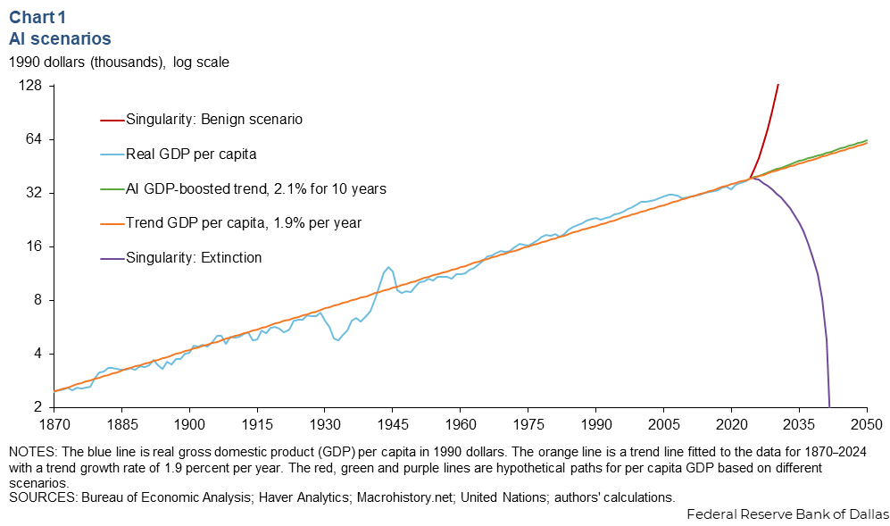

I find it extremely difficult to meaningfully discuss AI1 in any way. This is for a few reasons.
These reasons include the fact that I am required2 by my current employer to use it, I have a real financial interest in the success of the technology from a business standpoint, and the scope of discussion around AI reaches basically everything in contemporary society. In other words, I have very real conflicts of interest and, outside of that, there's just too much to say. It's possible to write 100,000 words on just the cultural impacts of AI and still barely scratch the surface of the possible conversation. Any nuance just opens a rabbit hole. There are many, many PhD theses to be written on these topics, and I hope there are some people out there doing exactly that.
Even still, I have a website, which means I automatically have a blog. Plus, I work in tech, so I automatically believe that I have an opinion that's worth listening to. I have to say something.
The most important thing that I have to say is that I believe other people--much more well-researched, articulate, and experienced than me--have put forward much clearer positions that are worth reading. I find many of these very compelling to some degree. Here are just three of them, which open new tabs:
Each of these people have made other well-written articles and posts worth reading on this topic, and they all link to other great articles by others. I know that some people may feel that those that I'm linking to are short-sighted, uneducated on the latest advancements in AI, radical extremists, or otherwise appear to be hard-liners. I know that linking to and agreeing with these views in any fashion will cause these same people to place me in those buckets.
I don't care!
All of these articles highlight distinct harms in different areas of life that AI, in its current incarnation, has directly caused. Ignoring these harms and dismissing these people as wacky luddites is an injustice in itself. Whatever someone's overall stance is, not being willing to seriously engage with these issues feels intellectually dishonest at best. It's very easy to position these harms as inevitable collateral damage in the constant march of scientific and technical progress3, but those kinds of harms have a long, brutal history that suddenly become unacceptable when it's you and your community shouldering the burden. We should constantly seek to minimize the harms of progress, even when we might believe that progress is extremely important. Brazenly polluting and poisoning Black communities in the American South isn't that.
I don't find much use in debating the exact details of the harms of AI at this point. Given the sheer extent and variety of these harms, I don't see any issue when people end up rejecting AI in every form altogether. Currently, I don't use AI in my personal life4. I didn't use it while getting my college degree. I try to avoid it in my media consumption5. I may accidentally run into it at times, because tech has a comically poor consent culture6.
In all of these cases, I don't think I'm missing out on anything. When I see peers asking a chatbot about the restaurant menu in front of them while I have a conversation with a waiter, I'm not convinced my life is worse off. If AI makes life that much better, I would like to believe I would be able to tell. Currently, I can't tell, but I know it has all of these harms, and my AI usage contributes to demand that worsens those harms. It doesn't help that it's also heavily associated with known scumbags who happen to be nazis, white supremacists, fascists, and rapist defenders who directly benefit the more its used. I don't like that stuff, so I avoid supporting projects that intentionally ignore those issues. I'm happy to opt out entirely, thanks.
For most people, the conversation ends at the above section. Someone can take a sober look at the pros and cons of using AI versus not doing so, then decide where they want to draw that line. I, and others, have concluded that no consumer AI product is on our side of the line. This is not a widely held stance in the software engineering community.
Many technically-oriented people allow for AI use to design, generate, and review code. This exception exists even among my peers who readily recognize the multitude of harms and threats posed by AI in other use cases. While I find it interesting to think about why this happens7, I don't want to guess at the exact reasons for why people carve out this use in particular. However, I do think I have an ounce of authority in this area, given that my education and work credentials are based on trying to think very critically about software engineering.
One defense that comes up frequently when discussing AI use in software engineering is that AI improves developer productivity8, sometimes by a lot. I think this is a difficult claim.
Personally, I try to keep track of my AI use at work and keep a running tally of the times it helped me do what I wanted to do. With the latest models, using agents, and trying many different interfaces, I've never gotten above a 50% success rate, and that's including the times where I got the outcome I wanted without understanding it. I'm at a stage in my career where I want to improve my skills and learn as much as possible, so I'm especially sensitive to that lack of understanding. I gives me the outcomes without the learning, and does so inconsistently. With that hit rate, I don't expect to become a better software engineer by using it more.
Outside of myself, my experience seems to bear out in the data. Many papers9 about developer productivity and AI use seem to paint a very mixed picture. Developers in a variety of organizations that use AI seem to commit more code more often and get more pull requests completed10. At the same time, those developers say they are spending more of their time reviewing and editing code, and that this can come with additional types of strain and pressure. Developers who use AI also tend to have worse mental models about their code, and immediately do significantly worse when trying to answer questions about it.
The picture being painted is, at best, one that shows a moderate increase for most developers in their ability to produce code. The trade-off there is that developers don't know the code that they're committing, and code reviewers need to spend more time understanding it. In the worst case, AI development is injecting growing amounts of technical debt into projects without much accountability, since AI might also be doing the reviewing.
I'm incredibly worried about both cases. As someone who was taught early to write code as if it was being maintained a violent psychopath who knew where I lived, it's concerning when people advocate for shifting the mental labor onto reviewers and maintainers, making the psychopath much more angry11.
Also, I'm not convinced visible software is much better today then it was in 2022. With the exception of chatbots and photo generators, it doesn't feel like the average experience of tech has changed all that much, let alone for the better. There are more games on Steam and more apps on app stores, but it's not immediately clear that additional software is any good or, cynically, has any revenue. If developers are genuinely more productive, I'm not sure they're working on the right things, nor is it getting the outcomes that many of them might want.
I would also be remiss to not highlight that the finances of major AI model providers and, by extension, companies heavily invested in AI, have been incredibly volatile. Depending on any single company comes with risks, and these companies appear to be especially risky in the medium-term12. Uprooting how people work to solely rely on these companies to provide a service people were already being paid to do seems short-sighted in my limited view.
Looking at each of these points together, I don't see a reason to carve out the exception for AI in software engineering at work if you don't have to. If the productivity gains were much clearer or there was some major software revolution going on, I would get why people seem to push for this despite the known issues. The data doesn't show that! The extra risk seems unnecessary!
I saw a chart from the Dallas Fed from while back that has stuck in my brain.

I love this chart. It's so dumb. An employee at the storied, historical Federal Reserve Bank of Dallas got paid to think about what happens to the GDP of the United States if everyone dies13. Everything is in 1990 dollars for some reason. I really hope the economists who made this chart enjoyed making it as much as I enjoy looking at it. I'm glad they think the path towards extinction still has a non-zero GDP after a decade.
This chart is making a point by showing, essentially, three true outcomes. If AI, as it exists today, is truly the most transformative technology in human history and is poised to dramatically change everything as we know it, for better or worse, you will know quickly. Nothing you do now, for or against AI, will matter, because it will happen. As Nikhil Suresh says in his essay, you're merely "an ant bracing itself very hard in the shadow of a towering tsunami." If this kills everyone, then how it affects work, coding, art, and everything else simply does not matter anymore. If it brings about a utopia, then everything being done today still doesn't matter.
If, instead, we're on the trendline with roughly an additional 0.2% added to yearly GDP growth, then AI adoption will matter only very selectively, in limited cases, with eventual regulation to stave off the worst effects. It will not make people much more productive outside of very limited cases. Most people probably aren't going to pay much, if anything, to use it. A lot of organizations will not stick with it. The people who do use it will know exactly what to use it for. The world is mostly the same.
In each case, the real harms of AI use that exist today do not go away. AI, from everything I can tell, seems to provide limited benefits to the people who use it, but thrusts the extensive negative effects onto everybody. In each future scenario, there is no rush to begin using AI now. I'm happy to wait for something better.
No AI was used in creating this blog post at any stage.